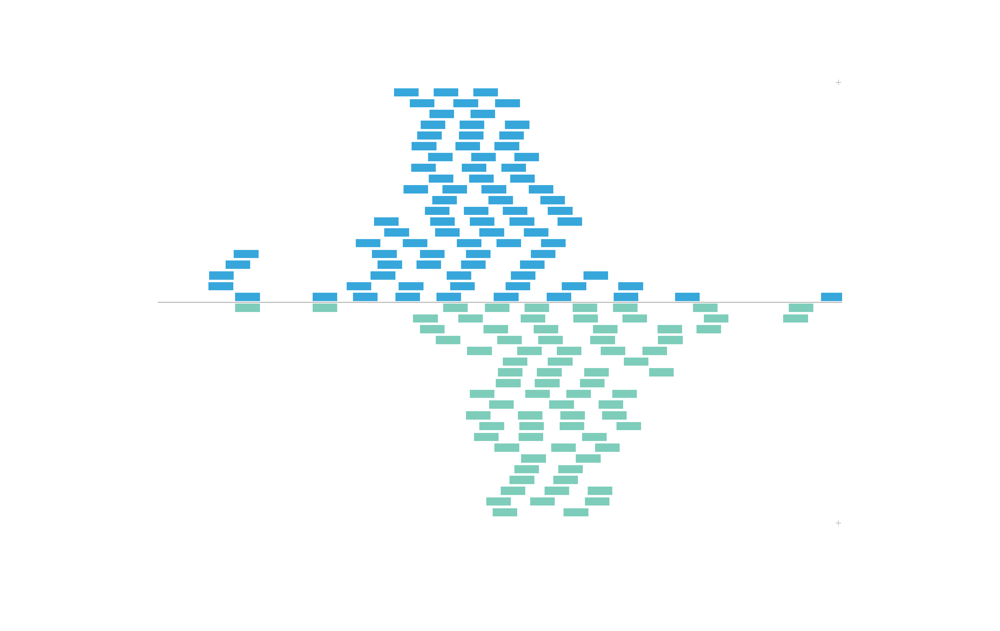
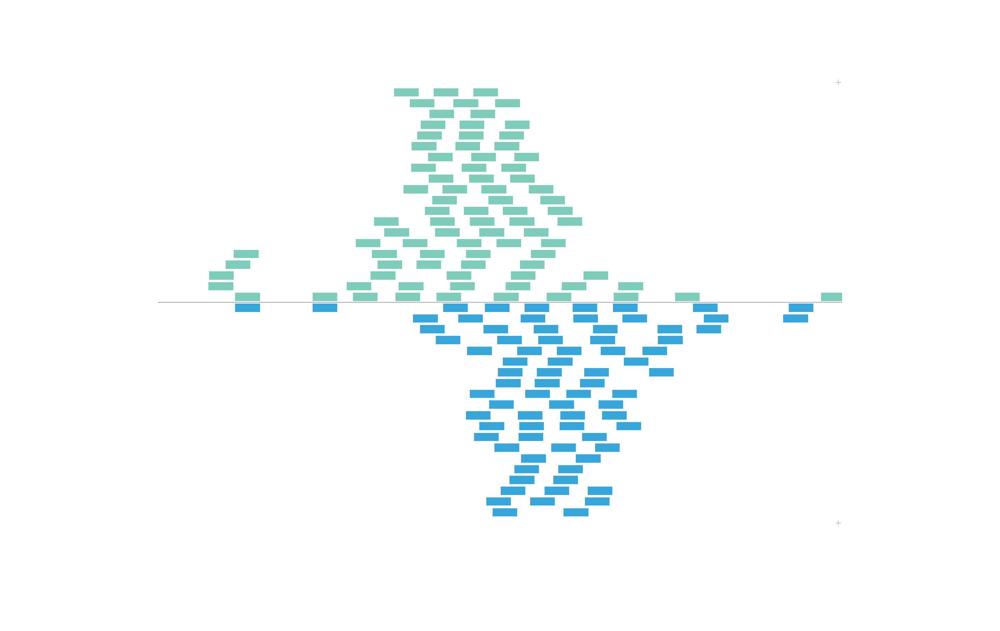
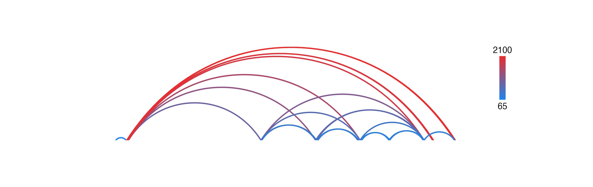

plotgardener Meta Functions
Source:vignettes/guides/plotgardener_meta_functions.Rmd
plotgardener_meta_functions.Rmdplotgardener meta functions enhance the
plotgardener user experience by providing simple methods to
display various genomic assembly data, simplify
plotgardener code, and construct plotgardener
objects. Functions in this category include:
-
genomesanddefaultPackages
Simple functions to display the strings of available default genomic
builds and the genomic annotation packages associated with these builds
in plotgardener functions.
genomes()
#> bosTau8
#> bosTau9
#> canFam3
#> ce6
#> ce11
#> danRer10
#> danRer11
#> dm3
#> dm6
#> galGal4
#> galGal5
#> galGal6
#> hg18
#> hg19
#> hg38
#> mm9
#> mm10
#> rheMac3
#> rheMac8
#> rheMac10
#> panTro5
#> panTro6
#> rn4
#> rn5
#> rn6
#> sacCer2
#> sacCer3
#> susScr3
#> susScr11
defaultPackages("hg19")
#> 'data.frame': 1 obs. of 6 variables:
#> $ Genome : chr "hg19"
#> $ TxDb : chr "TxDb.Hsapiens.UCSC.hg19.knownGene"
#> $ OrgDb : chr "org.Hs.eg.db"
#> $ gene.id.column: chr "ENTREZID"
#> $ display.column: chr "SYMBOL"
#> $ BSgenome : chr "BSgenome.Hsapiens.UCSC.hg19"assembly
A constructor to make custom combinations of genomic annotation
packages for use in plotgardener functions through the
assembly parameter.
pgParams
A constructor to capture sets of parameters to be shared across
multiple function calls. pgParams objects can hold any
argument from any plotgardener function. Most often,
pgParams objects are used to store a common genomic region
and common x-placement coordinate information. For a detailed example
using the pgParams object, refer to the vignette Plotting
Multi-omic Data.
-
colorbyandmapColors
The colorby constructor allows us to color the data
elements in plotgardener plots by various data features.
These features can be a numerical range, like some kind of score value,
or categorical values, like positive or negative strand. The
colorby object is constructed by specifying the name of the
data column to color by, an optional color palette function, and an
optional range for numerical values. If not specified,
plotgardener will use the RColorBrewer
“YlGnBl” palette for mapping numerical data and the “Pairs” palette for
qualitative data.
For example, if we revist the BED plot above,
IMR90_ChIP_CTCF_reads has an additional strand
column for each BED element:
data("IMR90_ChIP_CTCF_reads")
head(IMR90_ChIP_CTCF_reads)
#> chrom start end strand
#> 15554862 chr21 28000052 28000088 -
#> 15554863 chr21 28000092 28000128 -
#> 15554864 chr21 28000162 28000198 -
#> 15554865 chr21 28000251 28000287 +
#> 15554866 chr21 28000335 28000371 -
#> 15554867 chr21 28000500 28000536 +Thus, we can use the colorby constructor to color BED
elements by positive or negative strand. The strand column
will be converted to a factor with a - level and
+ level. These values will be mapped to our input
palette:
set.seed(nrow(IMR90_ChIP_CTCF_reads))
plotRanges(
data = IMR90_ChIP_CTCF_reads,
chrom = "chr21", chromstart = 29073000, chromend = 29074000,
assembly = "hg19",
order = "random",
fill = colorby("strand", palette =
colorRampPalette(c("#7ecdbb", "#37a7db"))),
x = 0.5, y = 0.25, width = 6.5, height = 4.25,
just = c("left", "top"), default.units = "inches"
)
To further control the order of color mapping, we can set our
categorical colorby column as a factor with our own order
of levels before plotting:
data("IMR90_ChIP_CTCF_reads")
IMR90_ChIP_CTCF_reads$strand <- factor(IMR90_ChIP_CTCF_reads$strand, levels = c("+", "-"))
head(IMR90_ChIP_CTCF_reads$strand)
#> [1] - - - + - +
#> Levels: + -Now we’ve set the + level as our first level, so our
palette will map colors in the opposite order from
before:

In this example, we will color BEDPE arches by a range of numerical
values we will add as a length column:
data("IMR90_DNAloops_pairs")
IMR90_DNAloops_pairs$length <- (IMR90_DNAloops_pairs$start2 - IMR90_DNAloops_pairs$start1) / 1000
head(IMR90_DNAloops_pairs$length)
#> [1] 65 1960 2100 850 1200 1485Now we can set fill as a colorby object to
color the BEDPE length column by:
bedpePlot <- plotPairsArches(
data = IMR90_DNAloops_pairs,
chrom = "chr21", chromstart = 27900000, chromend = 30700000,
assembly = "hg19",
fill = colorby("length",
palette = colorRampPalette(c("dodgerblue2", "firebrick2"))),
linecolor = "fill",
archHeight = IMR90_DNAloops_pairs$length / max(IMR90_DNAloops_pairs$length),
alpha = 1,
x = 0.25, y = 0.25, width = 7, height = 1.5,
just = c("left", "top"),
default.units = "inches"
)And now since we have numbers mapped to colors, we can use
annoHeatmapLegend() with our arches object to
add a legend for the colorby we performed:
annoHeatmapLegend(
plot = bedpePlot, fontcolor = "black",
x = 7.0, y = 0.25,
width = 0.10, height = 1, fontsize = 10
)
If users wish to map values to a color palette before passing them
into a plotgardener function, they can use
mapColors:
colors <- mapColors(vector = IMR90_DNAloops_pairs$length,
palette = colorRampPalette(c("dodgerblue2", "firebrick2")))
bedpePlot <- plotPairsArches(
data = IMR90_DNAloops_pairs,
chrom = "chr21", chromstart = 27900000, chromend = 30700000,
assembly = "hg19",
fill = colors,
linecolor = "fill",
archHeight = heights, alpha = 1,
x = 0.25, y = 0.25, width = 7, height = 1.5,
just = c("left", "top"),
default.units = "inches"
)
Session Info
sessionInfo()
#> R version 4.6.0 (2026-04-24)
#> Platform: aarch64-apple-darwin23
#> Running under: macOS Tahoe 26.5.1
#>
#> Matrix products: default
#> BLAS: /Library/Frameworks/R.framework/Versions/4.6/Resources/lib/libRblas.0.dylib
#> LAPACK: /Library/Frameworks/R.framework/Versions/4.6/Resources/lib/libRlapack.dylib; LAPACK version 3.12.1
#>
#> locale:
#> [1] C.UTF-8/C.UTF-8/C.UTF-8/C/C.UTF-8/C.UTF-8
#>
#> time zone: America/New_York
#> tzcode source: internal
#>
#> attached base packages:
#> [1] grid stats graphics grDevices utils datasets methods
#> [8] base
#>
#> other attached packages:
#> [1] plotgardenerData_1.18.0 plotgardener_1.15.1
#>
#> loaded via a namespace (and not attached):
#> [1] SummarizedExperiment_1.42.0 gtable_0.3.6
#> [3] rjson_0.2.23 xfun_0.58
#> [5] bslib_0.11.0 ggplot2_4.0.3
#> [7] htmlwidgets_1.6.4 plyranges_1.32.0
#> [9] rhdf5_2.56.0 Biobase_2.72.0
#> [11] lattice_0.22-9 rhdf5filters_1.24.0
#> [13] bitops_1.0-9 vctrs_0.7.3
#> [15] tools_4.6.0 generics_0.1.4
#> [17] yulab.utils_0.2.4 parallel_4.6.0
#> [19] stats4_4.6.0 curl_7.1.0
#> [21] tibble_3.3.1 pkgconfig_2.0.3
#> [23] Matrix_1.7-5 data.table_1.18.4
#> [25] ggplotify_0.1.3 RColorBrewer_1.1-3
#> [27] cigarillo_1.2.0 S7_0.2.2
#> [29] desc_1.4.3 S4Vectors_0.50.1
#> [31] lifecycle_1.0.5 compiler_4.6.0
#> [33] farver_2.1.2 Rsamtools_2.28.0
#> [35] textshaping_1.0.5 Biostrings_2.80.1
#> [37] codetools_0.2-20 Seqinfo_1.2.0
#> [39] GenomeInfoDb_1.48.0 htmltools_0.5.9
#> [41] sass_0.4.10 RCurl_1.98-1.19
#> [43] yaml_2.3.12 pillar_1.11.1
#> [45] pkgdown_2.2.0 crayon_1.5.3
#> [47] jquerylib_0.1.4 BiocParallel_1.46.0
#> [49] cachem_1.1.0 DelayedArray_0.38.2
#> [51] abind_1.4-8 tidyselect_1.2.1
#> [53] digest_0.6.39 purrr_1.2.2
#> [55] restfulr_0.0.17 dplyr_1.2.1
#> [57] fastmap_1.2.0 cli_3.6.6
#> [59] SparseArray_1.12.2 magrittr_2.0.5
#> [61] S4Arrays_1.12.0 XML_3.99-0.23
#> [63] withr_3.0.2 scales_1.4.0
#> [65] UCSC.utils_1.8.0 rappdirs_0.3.4
#> [67] rmarkdown_2.31 XVector_0.52.0
#> [69] httr_1.4.8 matrixStats_1.5.0
#> [71] otel_0.2.0 ragg_1.5.2
#> [73] evaluate_1.0.5 knitr_1.51
#> [75] BiocIO_1.22.0 GenomicRanges_1.64.0
#> [77] IRanges_2.46.0 rtracklayer_1.72.0
#> [79] gridGraphics_0.5-1 rlang_1.2.0
#> [81] Rcpp_1.1.1-1.1 glue_1.8.1
#> [83] BiocGenerics_0.58.1 jsonlite_2.0.0
#> [85] strawr_0.0.92 Rhdf5lib_2.0.0
#> [87] R6_2.6.1 MatrixGenerics_1.24.0
#> [89] GenomicAlignments_1.48.0 systemfonts_1.3.2
#> [91] fs_2.1.0